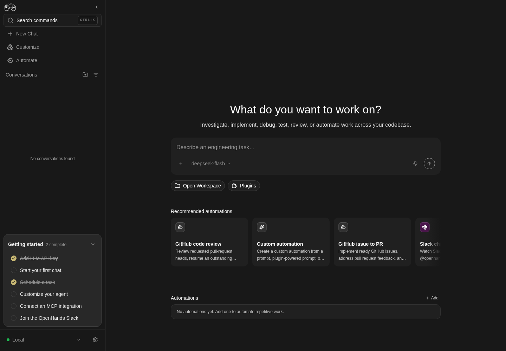

How to get to it
- A terminal:
npx @openhands/agent-canvas [flags]; from this checkout,node bin/agent-canvas.mjs [flags](whatcontrol-openhands launchstarts with--port, and--publicfor public mode). - The browser at the ingress URL the launcher prints (
http://localhost:8000/by default). - Backend selector (
backend-selector) → Add Backend (add-backend-menu-item) → Agent-server → Remote, and Manage Backends to remove it (see F25 for the backend registry itself). - Public mode and the API-key screen are mapped in F01 (
F01.api-key-entry,F01.onboarding-backend-step). npm run build:libfor the embeddable library; a host app imports@openhands/agent-canvas(seedocs/DEVELOPMENT.md, "Cloud organization recovery in embedded hosts").docker run ... ghcr.io/openhands/agent-canvasornpm run build:docker, thenhttp://localhost:8000/canvas.helm install agent-canvas ./helm/agent-canvason a Kubernetes cluster (helm/agent-canvas/README.md).npm run desktop(development) or a packaged build fromnpm run build:desktop; the window opens itself.- ACP agents (Claude Code, Codex, Gemini CLI) are chosen in onboarding (F01) and Settings → Agents (F13); this family does not repeat them.
Before you start
Start with the common launch and health checks, then follow this family’s preconditions in order. Recipes share the fixtures and state named below.
Preconditions:
- Baseline state (launched, doctored,
onboard --skipdone) on your own run:control-openhands launch --new --build never,export OH_VERIFY_RUN=<run from the launch JSON>,control-openhands doctor,control-openhands onboard --skip. Commands run from the checkout root. F26.desktop-*need the Electron binary (node_modules/electron/dist/electron;npx --no-install electron --versiondownloads it on first use) andXvfbplus ImageMagickimportfor headless capture. The app binds the fixed ports 8000, 18000, 18001 and 3001: check them like the blocks below and keep the run short.F26.runtime-servicesandF26.runtime-services-agent-useneed an active LLM profile (control-openhands llm preset deepseek); the second also needs the automation service running and costs two short runs (the conversation and the dispatched automation run).- The partial-stack and LAN bullets start extra launchers by hand (harness gap:
launchhas no--frontend-only,--backend-onlyor--host). Each one needs a free block of ports: these recipes use 18960–18963 and 18970–18973, plus 19961, the editor port a launcher that serves VS Code hands its agent-server (see Gotchas); check them first withfor p in 18960 18961 18962 18963 18970 18971 18972 18973 19961; do (echo > /dev/tcp/127.0.0.1/$p) 2>/dev/null && echo "$p busy"; done(no output means free). Each launcher gets a privateHOMEand state under$OH_VERIFY_RUN/private/, so it never touches~/.openhandsor your run.
Behavior inventory
32 stable behavior IDs and their expected behavior
F26.cli-version--versionand-vprint the package version and exit 0. Read recipe ↓F26.cli-info--infoprints the package version, the default agent-server and automation pins, the minimum agent-server version, the default ports and the override env vars. Read recipe ↓F26.cli-help--helpprints usage, auth modes, options, env vars and examples. Read recipe ↓F26.cli-flag-conflicts--frontend-onlywith--backend-only, and--publicwith--frontend-only, exit 1 with a one-line error before anything starts. Read recipe ↓F26.cli-public-needs-key--publicwithoutLOCAL_BACKEND_API_KEYexits 1 with guidance. Read recipe ↓F26.cli-missing-builda package withoutbuild/exits 1 withNo build foundand build instructions. Read recipe ↓F26.cli-port-in-usean occupied ingress (or service) port stops the launch withCannot start: the following ports are already in usenaming each busy port. Read recipe ↓F26.loopback-bind-defaultwithout--hostthe ingress listens on127.0.0.1only: the machine's own non-loopback address refuses the connection while loopback serves the app. Read recipe ↓F26.session-key-rotatedin local mode a stale session key left in the browser (the launcher's key changed since the last visit) is replaced by the injected key on load: the app opens on Home without the API-key screen, and the storedLocalbackend holds the new key (public mode asks for it instead: F01's api-key-entry row). Read recipe ↓F26.session-key-persistin local mode withoutLOCAL_BACKEND_API_KEYthe launcher generates a session key, saves it under$HOME/.openhands/agent-canvas/api-key.txtand injects the same key again on the next start. Read recipe ↓F26.session-key-pinnedLOCAL_BACKEND_API_KEY=<key>in local mode injects exactly that key into the page and the API accepts only it (the saved generated key gets 401). Read recipe ↓F26.frontend-only--frontend-onlyserves the SPA;/server_info,/api/*,/sockets/*and/api/automation/*answer 503, and a browser new to that origin opens on the Add a backend onboarding step without an error toast. Read recipe ↓F26.frontend-only-returningon a frontend-only origin, a browser that already stores a backend for that origin (thedefault-localentry a full launcher on the same port seeded, or one added there earlier) gets the recovery gate instead of onboarding:agent-server-onboarding-screenwith Manage backends in recovery mode and theLocalrowDisconnectedwith the 503 detail (the gate itself is F25's recovery-gate row); the failing probes raise genericAn error occurredtoasts there (Known failure, reproduced 2026-10-08: #18160). Read recipe ↓F26.backend-only--backend-onlyserves the APIs (key-protected) and answers 503No backend configured for this routefor/and static assets. Read recipe ↓F26.cross-connecta frontend-only UI connects to a separate backend-only instance through Add a backend; the shell then shows that backend as Connected and all API traffic goes to it. Read recipe ↓F26.remote-backendfrom a normal Canvas, backend selector → Add Backend → Agent-server → Remote shows the self-hosting guidance and connects to another instance (stand-in for a self-hosted VM,docs/SELF_HOSTING.md). Read recipe ↓F26.seeded-local-backendthe first load of a launcher-served UI seeds one backendLocal(iddefault-local) with the page origin and the injected key. Read recipe ↓F26.host-bind-lan--host 0.0.0.0warns, listens on the machine's LAN address, and serves an index.html that carries__AGENT_CANVAS_AUTH_REQUIRED__and neither__AGENT_CANVAS_SESSION_API_KEY__nor the key itself (the loopback launcher's page carries the key marker); the UI behaves like--public(Add a backend with Next disabled; Skip leads to the API-key screen). Read recipe ↓F26.host-bind-lan-optinthe opt-in the launcher's warning recommends (--allow-lan-session-key) should restore key injection on a LAN bind. Known failure (reproduced 2026-10-08): the npm launcher ignores the flag and the page still carries only__AGENT_CANVAS_AUTH_REQUIRED__; #17949. Read recipe ↓F26.host-bind-envOH_BIND_HOST=0.0.0.0(the environment form of--host) prints the same two "not loopback" warnings and does not inject the session key, even withLOCAL_BACKEND_API_KEYset. Read recipe ↓F26.runtime-services/server_info.runtime_serviceslists the agent-server, ingress, frontend and automation URLs as the agent sees them, and a new conversation's system prompt carries a matching<RUNTIME_SERVICES>block. Read recipe ↓F26.runtime-services-agent-usewith that block alone, the agent can reach the automation backend from its terminal: asked to, it reads the OpenAPI at the URL the block names, creates an enabled cron automation, and dispatches a run that completes; the automation and its run show up in the Automations UI. Read recipe ↓F26.lib-buildnpm run build:libproducesdist/where everypackage.jsonexportstarget exists and the main entry exportsAgentServerUIProviders,AgentServerUIRoot,CloudOrganizationBoundaryand the telemetry helpers. Read recipe ↓F26.lib-style-scopeall bundled CSS is scoped under[data-agent-server-ui], and theme tokens such as--oh-color-baselive on that scope root (observable in the standalone app). Read recipe ↓F26.lib-host-appmounted in a separate host app, Canvas styles stay inside the scope andstyleOverridesrestyle it. Blocked: no host-app example exists. Read recipe ↓F26.docker-imagedocker run ghcr.io/openhands/agent-canvasserves Canvas at/canvas; withoutAGENT_CANVAS_ALLOW_LAN_SESSION_KEY=truethe UI asks for the key. Blocked without a Docker daemon. Known failure (reproduced 2026-10-08): on a host whose kernel has no IPv6 (no/proc/net/if_inet6),docker/entrypoint.shstarts the static server with--host ::, which exits withlisten EAFNOSUPPORT: address family not supported :::8000, and the container stops within about half a minute of start, with exit code0(#18178). Read recipe ↓F26.docker-conversation-runtimeOH_CONVERSATION_RUNTIME=dockerruns each new conversation in its own container. Blocked without a Docker daemon. Read recipe ↓F26.helm-charthelm install agent-canvas ./helm/agent-canvasruns the Docker image as a Kubernetes StatefulSet with a PVC and an Ingress. Blocked withouthelmand a cluster. Read recipe ↓F26.desktop-boot-splashthe Electron app first shows a dark splash (logo, OpenHands Agent Canvas, spinner,Starting backend services…, then live service-log lines, a first-launch note and Show details). Read recipe ↓F26.desktop-main-windowafter boot a native window with a File/Edit/View/Window menu loadshttp://localhost:8000with the key injected (first run, no API-key screen). Read recipe ↓F26.desktop-macos-titlebaron macOS the desktop window hides the native title bar and reserves a 28 px drag band (titlebar-drag-region,aria-hidden) above the shell, so the sidebar logo clears the traffic lights and the window can be dragged; the band is dropped in native fullscreen, also after a reload while fullscreen. Linux and Windows windows and browser tabs render no band (window.desktopShellis undefined in a tab;platformislinuxon Linux). The band is rendered by the root layout, its error shell and the config-loading spinner, not by the first-run onboarding screen. Blocked without macOS (#17474).F26.desktop-external-linksexternal links in the desktop window open in the system browser for allowed schemes only. Not driven: the harness cannot click inside the Electron window. Read recipe ↓
Readable recipes
Read each script from top to bottom. Code is copied from the map; prose gives the action, expected observation, and conditions. <id>, <run> and similar placeholders stand for values from your own run. Short forms such as browser count continue the same control-openhands invocation; they are kept as documented.
Expected observations describe the recipe’s contract. Captures below selected recipes show representative real states from this snapshot; they do not mark every mapped behavior as passed. Follow cleanup before moving to another family.
No recipes match. Try another word or a behavior ID.
Version #
- Do
node bin/agent-canvas.mjs --version; echo "exit=$?" - Do
node bin/agent-canvas.mjs -v; echo "exit=$?" - NoteEach prints one line equal to
jq -r .version package.json(the checkout's package version, which changes with every release: compare, do not expect a number; e.g.[ "$(node bin/agent-canvas.mjs --version)" = "$(jq -r .version package.json)" ] && echo same) andexit=0.
Info #
- Do
node bin/agent-canvas.mjs --info - ExpectIt prints
@openhands/agent-canvas <version>(the--versionvalue),Default stack versions:withagent-server: <pin>andautomation: <pin>,Compatibility:agent-server: >= <minimum>,Default ports:ingress: 8000,agent-server: 18000,automation: 18001, and the override variablesOH_AGENT_SERVER_VERSION, OH_AGENT_SERVER_GIT_REF, OH_AGENT_SERVER_LOCAL_PATH/OH_AUTOMATION_VERSION, OH_AUTOMATION_GIT_REF. - ExpectThe three versions are read from
config/defaults.json(versions.agentServer,versions.automation,compatibility.minimumAgentServer) and move with every pin bump, so compare them with the file instead of expecting numbers:test "$(node bin/agent-canvas.mjs --info | awk '/^(Default stack versions|Compatibility):/{s=1;next} /^$/{s=0} s{print $NF}' | paste -sd' ' -)" = "$(jq -r '[.versions.agentServer,.versions.automation,.compatibility.minimumAgentServer]|join(" ")' config/defaults.json)" && echo match || echo mismatchprintsmatch, andprintf '%s\n' "$(jq -r .compatibility.minimumAgentServer config/defaults.json)" "$(jq -r .versions.agentServer config/defaults.json)" | sort -VC && echo pin-meets-minimum || echo below-minimumprintspin-meets-minimum(the default Agent Server passes the UI's own version gate).
Help #
- Do
node bin/agent-canvas.mjs --help - ExpectIt prints
USAGE:,AUTH MODES:(--public ... Users must paste it when the UI loads.),OPTIONS:(-p, --port,-H, --host,--public,--frontend-only,--backend-only,-v, --version,--info,-h, --help),ENVIRONMENT VARIABLES:andEXAMPLES:, exit 0.
Conflicting flags #
- Do
node bin/agent-canvas.mjs --frontend-only --backend-only; echo "exit=$?" - Note→
Error: --frontend-only and --backend-only cannot be used together,exit=1. - Do
node bin/agent-canvas.mjs --public --frontend-only; echo "exit=$?" - Note→
Error: --public cannot be used with --frontend-only,exit=1.
Public mode needs a key #
- NoteRun
T=$(mktemp -d); env -u LOCAL_BACKEND_API_KEY HOME=$T OH_CANVAS_SAFE_STATE_DIR=$T/state timeout 60 node bin/agent-canvas.mjs --public --port 18990; echo "exit=$?"; rm -rf $T. - ExpectAfter
✓ uvx foundit prints✗ PUBLIC MODE requires LOCAL_BACKEND_API_KEY environment variable.andexit=1. (The successful--publiclaunch iscontrol-openhands launch --new --public, mapped in F01.)
Missing build #
- NoteNever move this checkout's
build/(other runs serve it); copy the launcher instead:T=$(mktemp -d); mkdir -p $T/bin $T/config; cp bin/agent-canvas.mjs $T/bin/; cp package.json $T/; cp config/defaults.json $T/config/; node $T/bin/agent-canvas.mjs --port 18990; echo "exit=$?"; rm -rf $T. - ExpectIt prints
Error: No build found at <T>/build, the - Do
npm install - Note/
- Do
npm run build - Notehint and
exit=1.
Port in use #
- NotePoint a second launcher at your run's ingress port:
P=$(control-openhands status | jq -r .ports.ingress); T=$(mktemp -d); HOME=$T OH_CANVAS_SAFE_STATE_DIR=$T/state timeout 60 node bin/agent-canvas.mjs --port $P; echo "exit=$?"; rm -rf $T. - ExpectIt prints
Cannot start: the following ports are already in use:with• ingress: port <P>andAnother agent-canvas instance may already be running., then exits 1. - NoteYour run is untouched (
control-openhands doctorstays ok).
Loopback-only ingress #
- NoteYour run was started without
--host. - NoteRun
P=$(control-openhands status | jq -r .ports.ingress); curl -s -o /dev/null -w '%{http_code}\n' http://127.0.0.1:$P/(200), then find the machine's own address portably,LAN=$(node -e 'for (const a of Object.values(require("os").networkInterfaces()).flat()) if (a.family === "IPv4" && !a.internal) { console.log(a.address); break }'); echo "LAN=$LAN", and - Do
curl -s -o /dev/null -w '%{http_code}\n' --connect-timeout 3 http://$LAN:$P/; echo "exit=$?" - NoteAt that address curl prints
000andexit=7(connection refused). - NoteIf
LANis empty the machine has no non-loopback address: record the loopback half and leave the refused-connection halfnot-runwith that reason (it is the behavior this ID asserts, so an emptyLANis never a pass). - NoteRead-only second view, Linux form:
awk -v p=$(printf '%04X' $P) 'NR>1 && $4=="0A" && $2 ~ ":"p"$" {print $2}' /proc/net/tcpprints only0100007F:<hex port>(127.0.0.1in/proc/net/tcp's byte order; elsewhere list the listener with the OS's socket tool, for exampless -ltn 'sport = :'$Porlsof -nP -iTCP:$P -sTCP:LISTEN, and expect127.0.0.1:<P>only), andgrep -a 'Listening on' $OH_VERIFY_RUN/private/stack.logshows the ingress bannerListening on: http://localhost:<P>/. - ExpectThe LAN half of
F26.host-bind-lanbelow is the contrast: there the same curl answers200.
Backend-only #
- NoteStart it:
Q=$OH_VERIFY_RUN/private/f26-backend; mkdir -p $Q; HOME=$Q/home OH_CANVAS_SAFE_STATE_DIR=$Q/state OH_CANVAS_SAFE_BACKEND_PORT=18961 OH_CANVAS_SAFE_AUTOMATION_PORT=18962 OH_CANVAS_SAFE_VITE_PORT=18963 LOCAL_BACKEND_API_KEY=qa-f26-backend-key OH_SECRET_KEY=qa-f26-secret DO_NOT_TRACK=1 nohup node bin/agent-canvas.mjs --backend-only --port 18960 > $Q/launcher.log 2>&1 & echo $! > $Q/pid. - NoteWait until
- Do
curl -s -o /dev/null -w '%{http_code}' http://127.0.0.1:18960/healthis
200(30–90 s; the first start downloads the agent-server into the privateHOME). - Do
curl -s http://127.0.0.1:18960/ - Noteprints
No backend configured for this route(status 503, also for/index.htmland/assets/x.js),/server_infois 200,/api/settingsis 401 without a key and 200 with-H 'X-Session-API-Key: qa-f26-backend-key'. - NoteKeep it running for the next two bullets.
Frontend-only #
- NoteStart it:
Q=$OH_VERIFY_RUN/private/f26-frontend; mkdir -p $Q; HOME=$Q/home OH_CANVAS_SAFE_STATE_DIR=$Q/state OH_CANVAS_SAFE_BACKEND_PORT=18971 OH_CANVAS_SAFE_AUTOMATION_PORT=18972 OH_CANVAS_SAFE_VITE_PORT=18973 DO_NOT_TRACK=1 nohup node bin/agent-canvas.mjs --frontend-only --port 18970 > $Q/launcher.log 2>&1 & echo $! > $Q/pid(ready in a few seconds).for u in / /server_info /api/settings /sockets/events/x /api/automation/v1 /vscode/; do curl -s -o /dev/null -w "%{http_code} $u\n" http://127.0.0.1:18970$u; doneprints200 /and503for the four backend paths and for/vscode/: the launcher serves the VS Code editor and reserves its path, andgrep -a 'vscode -> 503' $Q/launcher.logprints[static] /vscode -> 503 (rejected)(see Gotchas). - NoteIn the browser:
- Do
control-openhands browser goto http://127.0.0.1:18970/ --allow-external - Check
control-openhands browser value 'testid=onboarding-backend-name'(
Local), - Check
control-openhands browser value 'testid=onboarding-backend-host'(
http://127.0.0.1:18970, the page origin),sleep 12, - Check
control-openhands browser toasts --history(
[]: no error toast) and - Do
control-openhands browser screenshot --feature F26.frontend-only --name add-backend-step(the Add a backend card).
Cross-connect #
- NoteOn that page run
- Do
control-openhands browser fill 'testid=onboarding-backend-name' 'QA Backend Only' - Do
control-openhands browser fill 'testid=onboarding-backend-host' 'http://127.0.0.1:18960' - Do
control-openhands browser fill 'testid=onboarding-backend-api-key' qa-f26-backend-key - Do
control-openhands browser click 'testid=onboarding-backend-next' - Wait
control-openhands browser wait 'testid=onboarding-step-choose-agent' --timeout 20000 - NoteOn a backend state that has never answered telemetry consent, the consent dialog opens on top (
control-openhands browser wait 'testid=telemetry-consent-form' --timeout 10000succeeds; it appears a second or two after the step, so an immediatebrowser countcan still read0; consent is stored on the backend, so a second pass with the same$Qskips it): - Do
control-openhands browser uncheck 'testid=telemetry-consent-form >> role=checkbox' - Do
control-openhands browser click 'testid=confirm-telemetry-preferences' - Do
control-openhands browser click 'testid=onboarding-skip' - Wait
control-openhands browser wait 'testid=root-layout' --timeout 20000 - NoteAfter
- Do
control-openhands browser reload - Check
control-openhands browser snapshot 'testid=backend-selector'shows
status "Connected"andcombobox "QA Backend Only". - Do
control-openhands browser goto http://127.0.0.1:18970/settings/secrets --allow-external - Check
control-openhands browser count 'testid=secret-item >> has-text=OPENHANDS_AUTOMATION_API_KEY'is
1(the backend-only instance's seeded secret), and - Check
control-openhands browser network --filter 18960 --last 5shows
byOriginwith onlyhttp://127.0.0.1:18960. - Check
control-openhands browser errors --app-onlyhas
pageErrors0.
Remote backend from a normal Canvas #
- NoteNeeds the backend-only instance.
- Do
control-openhands browser goto / - Do
control-openhands browser click 'testid=backend-selector' - Do
control-openhands browser click 'testid=add-backend-menu-item' - Do
control-openhands browser click 'testid=add-backend-option-agent-server' - Do
control-openhands browser click 'testid=add-backend-location-option-remote' - Check
control-openhands browser text 'testid=add-backend-agent-server-panel' - Noteincludes
Run the remote backend with --public, set a strong LOCAL_BACKEND_API_KEY, and expose it through an SSH tunnel, ngrok, or a TLS reverse proxy.Filltestid=add-backend-namewithQA_Remote,testid=add-backend-hostwithhttp://127.0.0.1:18960andtestid=add-backend-api-keywithqa-f26-backend-key, clicktestid=add-backend-submit, then - Wait
control-openhands browser wait 'testid=add-backend-modal' --state detached --timeout 15000 - Do
control-openhands browser reload - Check
control-openhands browser snapshot 'testid=backend-selector' - Note:
status "Connected",combobox "QA_Remote"(the new backend becomes active). - NoteIf you run this bullet without Cross-connect first, the backend-only state has not answered telemetry consent yet: the consent dialog (
This preference is saved for the local backend “QA_Remote” at http://127.0.0.1:18960.) opens over the page and blocks the selector; answer it as in Cross-connect (control-openhands browser wait 'testid=telemetry-consent-form' --timeout 10000,control-openhands browser uncheck 'testid=telemetry-consent-form >> role=checkbox',control-openhands browser click 'testid=confirm-telemetry-preferences'). - NoteSwitch back with
- Do
control-openhands browser click 'testid=backend-selector' - Do
control-openhands browser click 'role=option[name="Local"]' - Wait
control-openhands browser wait 'testid=backend-selector >> role=combobox[name="Local"]' --timeout 5000(the switch applies after a short delay: a snapshot taken right after the click still reads
combobox "QA_Remote": Local; after the wait it showscombobox "Local"). - NoteClean up:
backend-selector→testid=manage-backends-menu-item; - Check
control-openhands browser text 'testid=manage-backends-row-QA_Remote'reads
QA_Remote,v<version>,http://127.0.0.1:18960,Connected,LOCAL, where<version>is the backend-only instance's own report, - Do
curl -s http://127.0.0.1:18960/server_info | jq -r .version(the
versions.agentServerpin inconfig/defaults.jsonunless your shell exports anOH_AGENT_SERVER_*override, which a hand-started launcher inherits); it passes the UI's gate:printf '%s\n' "$(jq -r .compatibility.minimumAgentServer config/defaults.json)" "$(curl -s http://127.0.0.1:18960/server_info | jq -r .version)" | sort -VC && echo meets-minimum || echo below-minimumprintsmeets-minimum. - NoteThen click
testid=manage-backends-remove-QA_Remote,testid=confirmation-modal >> testid=confirm-button,testid=manage-backends-done,browser reload.
Seeded Local backend #
- NoteOn your run,
- Do
control-openhands browser eval "JSON.parse(localStorage.getItem('openhands-backends')).map(b=>({id:b.id,name:b.name,host:b.host,kind:b.kind,hasKey:!!b.apiKey}))"returns exactly one entry
{id: "default-local", name: "Local", host: "http://127.0.0.1:<ingress>", kind: "local", hasKey: true}(after the Remote cleanup above), and - Do
control-openhands browser eval "({key: Boolean(window.__AGENT_CANVAS_SESSION_API_KEY__), authRequired: window.__AGENT_CANVAS_AUTH_REQUIRED__ === true})"is
{key: true, authRequired: false}.
Rotated session key #
- NoteStill on your run's
/, - Do
control-openhands browser eval "JSON.parse(localStorage.getItem('openhands-backends'))[0].apiKey === window.__AGENT_CANVAS_SESSION_API_KEY__"is
true(compare keys inside the page; never print one). - NoteRun
md5sum $OH_VERIFY_RUN/private/session-key | cut -c1-12, then - Do
control-openhands restart --rotate-key(
rotatedKeytrue: the launcher comes back injecting a new key) and themd5sumline again; the hash changed. - ExpectThe open page still holds the old key, so its polls get
401until it reloads: run - Check
control-openhands browser errors --clear - Do
control-openhands browser reload - Wait
control-openhands browser wait 'testid=home-screen' --timeout 20000 - Check
control-openhands browser countis
1fortestid=root-layoutand0fortestid=api-key-entry-screen,testid=agent-server-onboarding-screenandtestid=onboarding-modal: Home, not the key prompt public mode shows in the same state (F01.api-key-entry). - NoteSecond view:
- Do
control-openhands browser eval "JSON.parse(localStorage.getItem('openhands-backends')).map(b=>({id:b.id,host:b.host,keyMatchesPage:b.apiKey===window.__AGENT_CANVAS_SESSION_API_KEY__}))"is
[{id: "default-local", host: "http://127.0.0.1:<ingress>", keyMatchesPage: true}]against the new page key, - Do
control-openhands browser eval "JSON.parse(localStorage.getItem('openhands-agent-server-config')).sessionApiKey === window.__AGENT_CANVAS_SESSION_API_KEY__"is
true(the legacy key is overwritten too), - Check
control-openhands browser network --filter 'api/settings' --last 2shows
status200underrecent, and - Check
control-openhands browser errors --app-onlyhas
pageErrors0andappErrors0. - Check
control-openhands api GET /api/settings - Noteworks with the rotated key, and
- Do
control-openhands browser screenshot --feature F26.session-key-rotated --name home-after-rotationshows Home.
Stop the partial stacks #
- Note
kill -TERM $(cat $OH_VERIFY_RUN/private/f26-frontend/pid) $(cat $OH_VERIFY_RUN/private/f26-backend/pid); after about 5 s the ports 18960–18963 and 18970–18973 are free again (check as in Preconditions). - NoteKill by the saved pid only, never by pattern.
LAN bind #
- NoteStart a full stack on all interfaces:
Q=$OH_VERIFY_RUN/private/f26-lan; mkdir -p $Q; HOME=$Q/home OH_CANVAS_SAFE_STATE_DIR=$Q/state OH_CANVAS_SAFE_BACKEND_PORT=18961 OH_CANVAS_SAFE_AUTOMATION_PORT=18962 OH_CANVAS_SAFE_VITE_PORT=18963 LOCAL_BACKEND_API_KEY=qa-f26-lan-key OH_SECRET_KEY=qa-f26-secret DO_NOT_TRACK=1 nohup node bin/agent-canvas.mjs --host 0.0.0.0 --port 18960 > $Q/launcher.log 2>&1 & echo $! > $Q/pid, and wait until - Do
curl -s -o /dev/null -w '%{http_code}' http://127.0.0.1:18960/is
200.grep -a 'not loopback' $Q/launcher.logshows[auth] Bind host 0.0.0.0 is not loopback — session key will not be injected into HTMLand[static] WARNING: bind host 0.0.0.0 is not loopback; refusing to inject the session API key into HTML.The served page proves it: - Do
curl -s http://127.0.0.1:18960/ | grep -o '__AGENT_CANVAS_\(SESSION_API_KEY\|AUTH_REQUIRED\)__' | sort -u - Noteprints only
__AGENT_CANVAS_AUTH_REQUIRED__and - Do
curl -s http://127.0.0.1:18960/ | grep -c qa-f26-lan-key - Noteprints
0, while your loopback run's page, - Check
curl -s "$(control-openhands status | jq -r .baseUrl)/" | grep -o '__AGENT_CANVAS_\(SESSION_API_KEY\|AUTH_REQUIRED\)__' | sort -u - Noteprints only
__AGENT_CANVAS_SESSION_API_KEY__. - ExpectThe bind is real: with
LANfrom the loopback bullet, - Do
curl -s -o /dev/null -w '%{http_code}\n' --connect-timeout 3 http://$LAN:18960/is
200here (refused on your run,F26.loopback-bind-default; with an emptyLANthis check isnot-run). - ExpectThe browser part below expects a profile that has never visited
127.0.0.1:18960(true in this file's order; on a repeat pass runcontrol-openhands browser resetfirst and restore your run afterwards, see Gotchas). - Do
control-openhands browser goto http://127.0.0.1:18960/ --allow-external - Do
control-openhands browser eval "({key: Boolean(window.__AGENT_CANVAS_SESSION_API_KEY__), authRequired: window.__AGENT_CANVAS_AUTH_REQUIRED__ === true})" - Note→
{key: false, authRequired: true}. - ExpectThe onboarding shows
testid=onboarding-step-check-backendwith - Check
control-openhands browser enabled 'testid=onboarding-backend-next' - Note
false(no key typed). - Do
control-openhands browser click 'testid=onboarding-skip' - Wait
control-openhands browser wait 'testid=api-key-entry-screen' --timeout 15000 - Notesucceed; after
sleep 12, - Check
control-openhands browser toasts --historyis
[](no error toast on either screen); - Do
control-openhands browser screenshot --feature F26.host-bind-lan --name api-key-screen - NoteFill
testid=api-key-entry-namewithQA_LANandtestid=api-key-entry-api-keywithqa-f26-lan-key, clicktestid=api-key-entry-submit; - Wait
control-openhands browser wait 'testid=root-layout' --timeout 10000 - Notesucceeds.
- NoteStop it with
kill -TERM $(cat $Q/pid).
LAN opt-in #
- NoteExpected: the opt-in the warning names (
Pass --host 127.0.0.1 (default) for local mode, or --allow-lan-session-key only if you accept LAN exposure.) makes the npm launcher inject the key again. - NoteStart the LAN stack as above with
--host 0.0.0.0 --allow-lan-session-key --port 18960(log to$Q/launcher2.log), wait for200, then - Do
curl -s http://127.0.0.1:18960/ | grep -o '__AGENT_CANVAS_\(SESSION_API_KEY\|AUTH_REQUIRED\)__' | sort -u - NoteToday it prints only
__AGENT_CANVAS_AUTH_REQUIRED__and the log repeats both "not loopback" warnings: the launcher ignores the flag (fail; see Gotchas). - NoteStop it with
kill -TERM $(cat $Q/pid).
Generated session key persists #
- NoteWith 18960–18963 free, define a helper and start a loopback stack without a key:
Q=$OH_VERIFY_RUN/private/f26-keys; mkdir -p $Q; start(){ HOME=$Q/home OH_CANVAS_SAFE_STATE_DIR=$Q/state OH_CANVAS_SAFE_BACKEND_PORT=18961 OH_CANVAS_SAFE_AUTOMATION_PORT=18962 OH_CANVAS_SAFE_VITE_PORT=18963 OH_SECRET_KEY=qa-f26-secret DO_NOT_TRACK=1 "$@" > $Q/launcher.log 2>&1 & echo $! > $Q/pid; for i in $(seq 1 60); do c=$(curl -s -o /dev/null -w '%{http_code}' http://127.0.0.1:18960/); [ "$c" = 200 ] && break; sleep 3; done; echo "code=$c"; }; start env -u LOCAL_BACKEND_API_KEY nohup node bin/agent-canvas.mjs --port 18960(code=200). - Do
curl -s http://127.0.0.1:18960/ | grep -o '__AGENT_CANVAS_SESSION_API_KEY__[^;<]*' | md5sum - Noteprints a hash (never print the key itself);
$Q/home/.openhands/agent-canvas/api-key.txtexists (64 hex characters) and - Do
curl -s -o /dev/null -w '%{http_code}' -H "X-Session-API-Key: $(cat $Q/home/.openhands/agent-canvas/api-key.txt)" http://127.0.0.1:18960/api/settingsis
200.kill -TERM $(cat $Q/pid); sleep 6, run the samestart ...line again in the same shell and repeat themd5sumline: the hash is identical.
Pinned session key #
- NoteSame shell, after
kill -TERM $(cat $Q/pid); sleep 6:start env LOCAL_BACKEND_API_KEY=qa-f26-pin-key nohup node bin/agent-canvas.mjs --port 18960. - Do
curl -s http://127.0.0.1:18960/ | grep -o '__AGENT_CANVAS_SESSION_API_KEY__[^;<]*' - Noteprints
__AGENT_CANVAS_SESSION_API_KEY__="qa-f26-pin-key";/api/settingsis200with-H 'X-Session-API-Key: qa-f26-pin-key'and401with the saved generated key. - NoteIn the browser,
- Do
control-openhands browser goto http://127.0.0.1:18960/ --allow-external - Do
control-openhands browser eval "({key: window.__AGENT_CANVAS_SESSION_API_KEY__ === 'qa-f26-pin-key', authRequired: window.__AGENT_CANVAS_AUTH_REQUIRED__ === true})" - Note→
{key: true, authRequired: false}.
Bind host from the environment #
- NoteSame shell, after
kill -TERM $(cat $Q/pid); sleep 6:start env LOCAL_BACKEND_API_KEY=qa-f26-pin-key OH_BIND_HOST=0.0.0.0 nohup node bin/agent-canvas.mjs --port 18960.grep -a 'not loopback' $Q/launcher.logshows the same[auth]and[static]warnings as--host 0.0.0.0, and - Do
curl -s http://127.0.0.1:18960/ | grep -o '__AGENT_CANVAS_\(SESSION_API_KEY\|AUTH_REQUIRED\)__' | sort -u - Noteprints only
__AGENT_CANVAS_AUTH_REQUIRED__. - NoteStop it with
kill -TERM $(cat $Q/pid); after about 6 s ports 18960–18963 are free.
Frontend-only, returning user #
- NoteSame shell, after
kill -TERM $(cat $Q/pid); sleep 6. - NoteArrange a browser that onboarded on this origin against the full launcher:
start env LOCAL_BACKEND_API_KEY=qa-f26-pin-key nohup node bin/agent-canvas.mjs --port 18960(code=200), - Do
control-openhands browser reset(a fresh profile, which also forgets your run's onboarding: restore it at the end),
- Do
control-openhands browser goto http://127.0.0.1:18960/ --allow-external - Wait
control-openhands browser wait 'testid=telemetry-consent-form' --timeout 15000(this backend state has never answered consent; a second pass on the same
$Qskips the form), - Do
control-openhands browser uncheck 'testid=telemetry-consent-form >> role=checkbox' - Do
control-openhands browser click 'testid=confirm-telemetry-preferences' - Wait
control-openhands browser wait 'testid=onboarding-step-choose-agent' --timeout 15000 - Do
control-openhands browser click 'testid=onboarding-skip' - Wait
control-openhands browser wait 'testid=root-layout' --timeout 20000 - Do
control-openhands browser eval "JSON.parse(localStorage.getItem('openhands-backends')).map(b=>({id:b.id,name:b.name,host:b.host}))"is
[{id: "default-local", name: "Local", host: "http://127.0.0.1:18960"}]. - NoteNow serve the same port without backends:
kill -TERM $(cat $Q/pid); sleep 6; start nohup node bin/agent-canvas.mjs --frontend-only --port 18960(code=200, andcurl -s -o /dev/null -w '%{http_code}' http://127.0.0.1:18960/server_infois503). - Do
control-openhands browser goto http://127.0.0.1:18960/ --allow-external - Wait
control-openhands browser wait 'testid=agent-server-onboarding-screen' --timeout 20000 - Notesucceed: the gate of
F25.recovery-gate, not onboarding. - Check
control-openhands browser countis
1fortestid=manage-backends-modaland0fortestid=onboarding-step-check-backend,testid=first-run-onboarding-screen,testid=api-key-entry-screen,testid=root-layout,testid=close-manage-backends-modalandtestid=manage-backends-done; - Do
control-openhands browser press Escape - Noteleaves the modal (
count1). - Check
control-openhands browser text 'testid=manage-backends-row-Local'reads
Local,http://127.0.0.1:18960,Disconnected,HTTP request failed (503 Service Unavailable): "Service Unavailable (no backend configured for this route)"andLOCAL, and - Check
control-openhands browser testidslists
manage-backends-add(Add Backend) as the way on. - Do
control-openhands browser screenshot --feature F26.frontend-only-returning --name recovery-gate - ExpectThe 503 probes are expected errors in the sweep:
- Check
control-openhands browser errors(without
--app-only, which keeps only your run's origin) listsexternal:http-errorrows with503forhttp://127.0.0.1:18960/server_info,/api/settingsand/api/llm/models/verified, andpageErrorsis0. - NoteStop it with
kill -TERM $(cat $Q/pid); after about 6 s ports 18960–18963 are free. - NoteRestore your run:
- Do
control-openhands browser goto / - Do
control-openhands onboard --skip
Runtime services #
- Check
control-openhands api GET /server_info --pick runtime_services.mode(
agent-canvas) and - Check
control-openhands api GET /server_info --pick runtime_services.services.automation.url_from_agent(
http://localhost:<automation port>;control-openhands statusprints the ports). - Wait
control-openhands conversation start --prompt "Reply with the single word: ok" --wait --timeout 180(prints
<id>) and - Check
control-openhands conversation events <id> --grep RUNTIME_SERVICES --from-start - Note: the
SystemPromptEventmatches, with an excerpt<RUNTIME_SERVICES>\nYou are running inside an agent-canvas dev stack started .... - Check
control-openhands conversation events <id> --grep "localhost:<automation port>" --from-startshows
* Automation backend: http://localhost:<port>plus itsDocs:andOpenAPI:URLs.

A real local CLI-launched Canvas is rendered; runtime_services.mode reports agent-canvas.
Only normal local runtime shown. This screenshot is not Docker, Electron, LAN, partial-stack or embeddable-library proof.
How this screenshot was taken
agent server: 1.53.0 · automation: 1.19.0 (launcher default) · canvas: 1.26.0
control-openhands launch --new --print-run
control-openhands doctor
control-openhands onboard --skip
control-openhands api GET /server_info --pick runtime_services.mode
control-openhands browser goto /
control-openhands browser screenshot --feature F26.runtime-services --name local-runtimeThe agent uses the runtime services #
- NoteWrite
qa-f26-agent.txt(outside the workspace) containing:Using the Automation backend described in your RUNTIME_SERVICES (read its OpenAPI to find the routes), create one automation named QA_rt_auto from a prompt: the prompt is "Reply with the single word: pong. Do not run any tools.", the schedule is the cron 0 9 * * *, and it is enabled. Then dispatch one run of it now. Do not change anything else. Reply with the automation id and the run id only.Run - Wait
control-openhands conversation start --prompt "$(cat qa-f26-agent.txt)" --wait --timeout 400(note
<agent-id>); the reply names<automation-id>and a run id. - Check
control-openhands conversation events <agent-id> --kinds ActionEvent --from-startshows the agent's own
curlcalls:http://localhost:<automation port>/api/automation/openapi.json,POST …/api/automation/v1/preset/promptandPOST …/api/automation/v1/<automation-id>/dispatch, each with theX-Session-API-Key: $OPENHANDS_AUTOMATION_API_KEYheader the block names. - NoteSecond view in the UI:
- Do
control-openhands browser goto /automations - Check
control-openhands browser text '[data-testid^=automation-card-] >> has-text=QA_rt_auto'(
QA_rt_auto, the prompt,cron,Runs 1). - NoteOpen it with
- Do
control-openhands browser click '[data-testid^=automation-card-] >> has-text=QA_rt_auto >> text=QA_rt_auto' --expect-url '/automations/[0-9a-f-]+' - NoteWithin about a minute,
- Check
control-openhands browser text 'testid=automation-activity-log'shows the run's summary (
Replied with the single word "pong" …), a cost andSuccessful(control-openhands browser screenshot --feature F26.runtime-services-agent-use --name agent-created-automation-run). - Check
control-openhands api GET /api/automation/v1/<automation-id>has
nameQA_rt_auto,trigger.schedule0 9 * * *andenabledtrue. - NoteDelete it afterwards (
control-openhands api DELETE /api/automation/v1/<automation-id> --write, arrange). - ExpectIt runs daily at 09:00 UTC otherwise.
Library build #
- NoteNever build inside the shared checkout (it regenerates i18n and typegen files the other runs hash); build in a copy:
L=$OH_VERIFY_RUN/private/f26-lib; mkdir -p $L; tar --exclude=./node_modules --exclude=./build --exclude=./.git --exclude=./dist -cf - . | tar -xf - -C $L; ln -s "$PWD/node_modules" $L/node_modules; (cd $L && npm run build:lib); echo "exit=$?". - ExpectIt ends with
✓ built inandexit=0(about 30 s). - NoteThen
(cd $L && node -e 'const p=require("./package.json"),fs=require("fs");let ok=0,miss=[];for(const[k,v]of Object.entries(p.exports))for(const f of(typeof v==="string"?[v]:Object.values(v)))fs.existsSync(f)?ok++:miss.push(k+" -> "+f);console.log(JSON.stringify({entries:Object.keys(p.exports),ok,missing:miss}))')prints 9 entries (.,./browser,./conversation,./files,./settings,./sidebar,./terminal,./i18n,./package.json),ok25 andmissing[].grep -ohE 'AgentServerUIProviders|AgentServerUIRoot|CloudOrganizationBoundary|configureTelemetry|setTelemetryConsent' $L/dist/lib/index.d.ts | sort -ulists all five. - NoteRemove the copy with
rm -rf $L.
Style scope #
- NoteOn your run's home page (
control-openhands browser goto /) run - Do
control-openhands browser eval "(() => { let total=0, unscoped=[]; for (const sh of document.styleSheets) { let rules; try { rules = sh.cssRules } catch { continue } const walk = (rs) => { for (const r of rs) { if (r.selectorText) { total++; if (!r.selectorText.includes('data-agent-server-ui')) unscoped.push(r.selectorText) } else if (r.cssRules) walk(r.cssRules) } }; walk(rules) } return { scopeRoots: document.querySelectorAll('[data-agent-server-ui]').length, total, unscopedCount: unscoped.length, sample: unscoped.slice(0, 12) } })()" - Note
totalis in the thousands andunscopedCountis2: only.go<hash>and.go<hash> > *, react-hot-toast's runtime classes. - Do
control-openhands browser eval "getComputedStyle(document.querySelector('[data-agent-server-ui]')).getPropertyValue('--oh-color-base').trim()"is
#181818. - ExpectThis proves the bundle is scoped, not that a host page is unaffected (
F26.lib-host-app).
Blocked #
- NoteIf
- Do
docker info - Notecannot reach the daemon but
dockerdis installed, start it (setsid dockerd); without one, record both Docker rowsblockednaming the missing daemon. - NoteWith a daemon, run the image with
-p 127.0.0.1:8000:8000, openhttp://localhost:8000/canvasand expect the Add a backend step (testid=onboarding-step-check-backend, Next disabled until a key is typed);onboarding-skipleads totestid=api-key-entry-screen. - NoteWith
-e AGENT_CANVAS_ALLOW_LAN_SESSION_KEY=truethe key is injected and first run opens on Choose your agent, under the telemetry consent dialog. - Do
npm run build:docker - Notebehind a TLS-intercepting proxy needs the proxy CA inside the build stages, and Docker Hub may answer 429.
- NoteRecord
F26.lib-host-appblockednaming the missing host-app example.command -v helm kubectlprints nothing here: recordF26.helm-chartblockednaming the missinghelmbinary and cluster; with them,helm lint helm/agent-canvasandhelm template qa helm/agent-canvasrender the StatefulSet, Service and Ingress, andhelm installfollowshelm/agent-canvas/README.md.
Desktop splash and window #
- NoteStart a private display and the app in one process group:
Q=$OH_VERIFY_RUN/private/f26-desktop; mkdir -p $Q/shots; setsid nohup sh -c "echo \$\$ > $Q/pgid; Xvfb :78 -screen 0 1440x1000x24 -nolisten tcp & sleep 1; DISPLAY=:78 HOME=$Q/home OH_CANVAS_SAFE_STATE_DIR=$Q/state LOCAL_BACKEND_API_KEY=qa-f26-desktop-key OH_SECRET_KEY=qa-f26-secret DO_NOT_TRACK=1 exec node_modules/.bin/electron --no-sandbox electron" > $Q/desktop.log 2>&1 &, then capture frames:for i in $(seq 1 40); do sleep 1; DISPLAY=:78 import -window root $Q/shots/s$(printf %02d $i).png; done. - NoteRead the frames: the first seconds show the splash (logo,
OpenHands Agent Canvas,AI coding agent interface, spinner,Starting backend services…, then lines such asagent-server: {"asctime": ..., the noteFirst launch downloads Python + the OpenHands agent server.and a Show details button); a later frame shows the main window with aFile Edit View Windowmenu and the first-run Choose your agent step under the consent dialog namingthe local backend "Local" at http://localhost:8000(about 30 s on a warm cache, minutes on the first download). - NoteCopy the frames you cite into
$OH_VERIFY_RUN/evidence/F26.desktop-boot-splash/and.../F26.desktop-main-window/. - NoteStop in two steps:
kill -TERM $(cat $Q/pgid)signals only the Electron launcher (it quits and stops its backend services); after about 10 s ports 8000, 18000, 18001 and 3001 are free again. - NoteThen
kill -TERM -- -$(cat $Q/pgid)ends Xvfb;ps -o pid,cmd -g $(cat $Q/pgid)lists nothing.
External links #
- NoteNot driven: record
not-run(harness gap: no verb clicks inside the Electron window or observes the OS browser handoff).
Gotchas and known limits
control-openhands launchcovers only the full stack and--public. Partial stacks and--hostneed a hand-started launcher with its ownHOME,OH_CANVAS_SAFE_STATE_DIRand all threeOH_CANVAS_SAFE_*_PORTvariables; without them it writes into the real~/.openhands/agent-canvasand grabs the default ports 8000/18000/18001/3001 that another agent may be using.- A hand-started launcher's first start downloads the agent-server into its private
HOMEcache (30–90 s). Prefix assignments are expanded left to right, soHOME=$Q/home UV_CACHE_DIR=$HOME/.cache/uvpoints the cache into$Q/hometoo, not at your real cache. Reuse one$Qfor repeat launches to keep it warm. - The browser daemon refuses other origins unless you pass
--allow-externaltobrowser goto. Each port is its own origin, so a partial-stack page starts at first run again (onboarding and a consent dialog), independent of your run's onboarding. - In a frontend-only UI the Add a backend step's Next is enabled with an empty key, while on a LAN or
--publicstack it is disabled until a key is typed: the host the step probes differs (503 vs. auth-required). - A partial-stack origin keeps its stored backend in the browser profile across launches, so a second pass lands straight in the shell.
control-openhands browser resetbrings back the first run on every origin; thencontrol-openhands browser goto /andcontrol-openhands onboard --skiprestore your own run's baseline. - Which screen a frontend-only origin shows depends on the browser, not the launcher: a profile new to the origin gets Add a backend (first run owns the initial backend), while a profile that stores a backend for that origin (the
default-localentry a full launcher on the same port seeded, or any backend added there earlier) gets the recovery gate ofF25.recovery-gateas soon as that backend answers 503 (F26.frontend-only-returning). The no-toast check belongs to the first-run state only: on the gate,browser toasts --historylists genericAn error occurredstatus toasts raised by the failing 503 probes (two within 12 s here), with no hint of which request failed. Known failure (reproduced 2026-10-08): both toasts come from the free-models hydrator'sGET /api/llm/models/verified503, which nometa.disableToastguards on that screen (nor doesbackend-version.tsx); #18160. - Stopping a backend-only instance while the frontend-only page that uses it stays open is the same backend-down state as
F25.recovery-gateafter a reload; keep the returning-user bullet above as the frontend-only-specific check (it reproduces thedefault-localcase). - The launcher serves the bundled VS Code editor. #17660 made that opt-in (
OH_CANVAS_ENABLE_VSCODE=true) and #18048 reverted it, so only a checkout between the two needs the variable (launch --vscodesets it). A launcher that serves it reserves/vscode/: a frontend-only stack answers503there and logs[static] /vscode -> 503 (rejected); a stack with an agent-server lists/vscode → http://127.0.0.1:<agent-server port + 1000>in its ingress banner and hands the agent-server that editor port (19961 for the hand-started launchers here, 19000 for the desktop app), which the launcher's own port check does not cover. On a checkout between the two without the variable,/vscode/is an ordinary SPA URL (200). Here the agent-server has no editor binary (VSCode server binary not found, VSCode will be disabledin the launcher log,/api/vscode/status{"running":false,"enabled":true}), so the editor port stays free even then. - The port-in-use error is printed twice, the second time with a Node stack trace, and suggests
PORT=<other>rather than--port(#17949). The--publickey error's example saysnpm run dev -- --publicinstead of the npx command. - A backend-only instance's
/server_info.runtime_servicesstill describes the ingress as routing/* to the frontend, which it does not run (#17949). - The Electron app hardcodes ports 8000/18000/18001 (and the static server takes 3001), ignores
PORT, and refuses to start as root without--no-sandbox(Running as root without --no-sandbox is not supported).npm run desktopfirst runsbuild:app, which rebuildsbuild/under every other run: startnode_modules/.bin/electron --no-sandbox electrondirectly against the existing build. - Never stop the desktop app with one group-wide signal: when Xvfb dies with Electron, the app exits without stopping its backend, which is left orphaned (own process groups, parent 1) on 8000/18000/18001/3001 and blocks the next start. If that happens, find the orphans by their ports' command lines (
ps -eo pid,pgid,cmd, look for--port 18000,--port 18001,--port 3001,ingress.mjs --port 8000) and stop each group by id. - The generated session key lives in
$HOME/.openhands/agent-canvas/api-key.txt, not underOH_CANVAS_SAFE_STATE_DIR: a hand-started launcher without a privateHOMEreads and writes the operator's real key file. - A browser origin keeps the backends it stored on an earlier pass: after the LAN pass on 18960, a later loopback launch on 18960 shows the stale
QA_LANbackend (red, old key) instead of onboarding, although the page injects a valid key. Assert key-injection bullets through thewindowglobals, orbrowser resetfirst. - Electron's splash shows each raw service-log line (
agent-server: {"asctime": ...) as its status text during boot; the named phases only appear between them. build:libfrom a copy whosenode_modulesis a symlink emits bundled dependencies underdist/<absolute node_modules path>/...; that path is an artifact of the copy, not of the product.- **Bug candidate (
F26.host-bind-lan-optin):**scripts/bind-host.mjstells npm users to pass--allow-lan-session-key, but neitherbin/agent-canvas.mjsnorscripts/dev-with-automation.mjsparses or forwards it (onlyscripts/static-server.mjsand the Docker entrypoint do), and unknown flags are silently ignored (#17949, whose first item is exactly this; reproduced again on 2026-10-08 at d2c89252d). - Known issue #17946: the npm launcher never creates its
TMUX_TMPDIR, so hand-started instances share one tmux server and a restart of one resets the others' terminals.
Source paths: bin/agent-canvas.mjs, scripts/dev-with-automation.mjs, scripts/dev-safe.mjs, scripts/dev-static.mjs, scripts/dev-extra-backend.mjs, scripts/bind-host.mjs, scripts/static-server.mjs, scripts/ingress.mjs, scripts/runtime-services-info.mjs, config/defaults.json, src/api/agent-server-adapter.ts, src/api/backend-registry/, docker/, electron/, helm/agent-canvas/, src/lib/index.ts, docs/SELF_HOSTING.md.